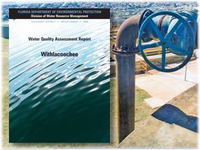

We love challenges. Bring us yours and we'll combine our creativity, knowledge, and problem-solving skills to surpass your expectations.
Collecting information to advance knowledge and support decision making
Covering diverse subject areas, our applied research is collaborative, interdisciplinary, rigorous, relevant and independent. We develop qualitative and quantitative methods to analyze issues and produce research that addresses the needs of practitioners and decision makers.